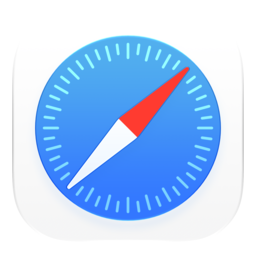

The big idea · the internet is a huge library
Browser, search engine, website
Browser
The app you use to walk in and read pages.
 Chrome ·
Chrome ·  Edge ·
Edge ·  Firefox ·
Firefox ·

SafariSearch engine
The librarian: a website that finds pages for you.
Google · Bing
Website
One "book" on the shelf, owned by someone.
www.bir.gov.ph · dict.gov.ph
Picture the internet as a huge library. The browser is how you walk in and read. The search engine is the librarian who points you to the right shelf. A website is one book, written and owned by someone.
Common mix-up: "I opened Google" when they mean "I opened Chrome." Google is the search engine; Chrome is the browser. Ask: "Which browser is on your office PC?" Usually Edge or Chrome.
Inside the browser
Five parts you use every day
Edge shown · Chrome looks the same · Firefox and Safari are similar

Microsoft Edge (Mac shown, dark theme). Edge and Chrome on Windows put these in the same places.
- Tabs: many pages in one window. Ctrl+T new, Ctrl+W close.
- Back, forward, reload.
- Address bar: type a web address or a search.
- Star: save a page you use often, Ctrl+D. Edge calls them Favorites, Chrome calls them Bookmarks.
- Downloads: files land in the Downloads folder (Ctrl+J). Move them into the right folder, like in 1.2.
Share your own browser and point to each part. Demo Ctrl+T, close it with Ctrl+W, then bring it back with Ctrl+Shift+T; people love that one.
Bookmark the BIR website with Ctrl+D. Then show the Downloads list (Ctrl+J in Chrome and Edge). Key habit: the Downloads folder is a waiting area, not a home. Move files into your organized folders.

Google Search in Microsoft Edge, Web filter, dark theme. Live results on 4 Nov 2026; yours will differ.
- Who made it? Check the domain and the "About" page.
- When was it posted or updated? Old rules may have changed.
- Why does it exist? To inform, to sell, or to scare you?
- Does another source agree? Check the official site or a reputable news outlet.
- Is it an ad? Results marked "Sponsored" are paid placements. (None showed on this search.)
Anyone can publish anything online. These five questions take less than a minute.
Office example: a Facebook post says there's a new tax deadline. Before telling taxpayers or colleagues, check the official BIR website or official announcements. Home example: a viral "free ayuda" link. Same five questions. Point out "Sponsored" labels in a live search so they can recognize ads.